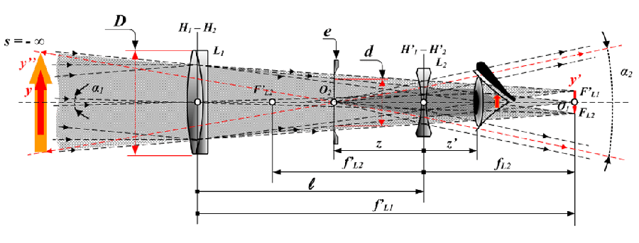

|
Что такое телескоп?
Телескоп был изобретением, которое произвело революцию в знаниях астрономии на протяжении всей истории. Используя свойства линз и зеркал, он отвечает за обработку света, излучаемого объектами, чтобы человеческий глаз мог увеличивать и захватывать изображения. Слово телескоп происходит от греческого корня: оно означает «далеко» и «видеть». Это оптический прибор, который стал фундаментальным инструментом в астрономических науках, позволив добиться многих успехов и лучше понять вселенную. Прибор помогает более детально рассмотреть очень удаленные объекты. Телескопы улавливают световое излучение, сближая изображения удаленных объектов. Услуги для: ◊ в астрономии фиксирует изображения звездных объектов; ◊ используется для наблюдения за удаленными объектами в следующих областях: навигация, разведка, изучение животных (птиц) и вооруженные силы; ◊ в качестве учебного пособия для детей, чтобы начать в науке; Главные задачи телескопов Известно, что кроме простых оптических моделей, предназначенных для астрометрии и астрофизики, существуют радиотелескопы, а также модели, работающие в условиях рентгеновского и инфракрасного излучения. Кстати, любой радиотелескоп, в отличие от своего оптического «коллеги», абсолютно на него не похож. Однако несмотря на это задачи любого инструмента можно свести к основным: ◊ собрать максимальное количество света (или энергии); ◊ увеличить освещённость небесного тела; ◊ создать изображение объекта хорошего качества; ◊ увеличить угловое расстояние между объектом и наблюдателем. Понятие «увеличение телескопа» обозначает не что иное, как увеличение этого углового расстояния, равное отношению фокусного расстояния как объектива, так и окуляра. Итак, главный принцип работы телескопа — не увеличение. Начинающие астрономы, приходя в магазин оптических товаров, часто задают такой вопрос: «А во сколько раз увеличивает вот этот прибор?» Постановка вопроса заведомо неправильная, поскольку главный критерий создания яркой картинки — это размер элемента, собирающего световые лучи, то есть, объектива. В качестве объектива может выступать линза или зеркало, в зависимости от конструкции той или иной модели. От того, какое количество света может собрать телескоп, напрямую определяется детализация получаемого изображения, начиная от лунного ландшафта и заканчивая кольцами Сатурна. Увеличение тоже имеет определённое значение, но не такое, как размер входного отверстия или объектива. Как устроен оптический телескоп? Независимо от конструкции в каждом приборе есть окуляр и объектив. Линза (или зеркало), которые обращены непосредственно к наблюдаемому небесному телу, получили название объектива, а линза поменьше (куда мы «прицеливаемся» глазом), называется окуляром. Оба элемента расположены на одной условной оптической оси. Как работает телескоп в целом? Если вы желаете наблюдать за объектами, находящимися близко к вам, необходимо периодически менять окуляры. Как правило, в комплектацию к каждому телескопу приложено минимум два разных окуляра. Благодаря им наблюдатель может изменять параметры увеличения, используя один и тот же объектив.  Линза телескопа, которая ближе к середине становится толще — собирающая линза (условно со знаком «плюс»), а если стекло, наоборот, посередине выглядит тоньше, речь идёт о рассеивающей линзе, со знаком «минус». Под оптической осью понимают условную прямую, которая соединяет центры этих линз. Лучи света, следуя параллельно оси, преломляются в линзе и фокусируются в определённой точке. Если линза телескопа обладает сильной кривизной, фокус будет меньше, а изображение предмета — максимально приближенным к реальности. Чтобы действительно знать, как работает телескоп, мы должны знать его части. Не все телескопы используют исключительно линзы. Есть несколько типов телескопов, которые могут использовать зеркала. Независимо от того, какой телескоп используется, его основная функция состоит в том, чтобы сконцентрировать как можно больше света и обеспечить четкое изображение удаленных объектов. Объектив может представлять собой линзу (или зеркало) с определенной апертурой или диаметром, которая при попадании света концентрирует его на другом конце оптической трубы. Оптические трубки могут быть изготовлены из стекловолокна, картона, металла и других материалов. Точка, в которой концентрируется свет, называется фокальной точкой, а расстояние от линзы до фокальной точки называется фокусным расстоянием. Отношение фокусного расстояния или радиус — это отношение между апертурой и фокусным расстоянием, оно представляет собой яркость системы и равно количеству ступеней диафрагмы, расположенных вдоль фокусного расстояния (отношение фокусного расстояния = фокусное расстояние / апертура). Малое фокусное расстояние (f/4) обеспечивает более яркое изображение, чем большое фокусное расстояние (f/10). Если требуется фотосъемка, система с малым фокусным расстоянием более желательна, потому что время экспозиции будет короче. Чем больше апертура (диаметр) телескопа, тем больше света будет собрано и результирующее изображение будет ярче. Это важно, потому что почти все небесные объекты очень тусклые и их свет очень тусклый. Удвоение диаметра телескопа увеличивает в четыре раза площадь, на которую попадает свет. это означает, что 12-дюймовый телескоп получает в 4 раза больше света, чем 6-дюймовый телескоп. По мере увеличения апертуры мы будем видеть звезды звездной величины слабее. Величина — это яркость небесного объекта. Значения, близкие к 0, являются яркими. Отрицательные величины очень яркие. Глаз может видеть до 6 звездной величины, что соответствует самым слабым звездам на краю видимости. Телескопы большего диаметра позволяют не только видеть более темные объекты. Кроме, увеличивает количество деталей, т.е. увеличивает разрешение. Астрономы измеряют разрешение в угловых секундах. Разрешение телескопа можно проверить, наблюдая расстояние между двумя звездами, видимое или угловое расстояние которых известно. |